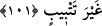
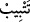

et-Te’vîlâtü’n-Necmiyye’de şöyle geçer: “Kimi cesedler vardır ki bunlar
kaybettikleri şeyleri tekrar elde etmeye ve nefislerinin bozduklarını ıslâh etmeye
elverişlidir. Kimi cesedler ise ölüm hasadı zamanının gelmesiyle birlikte biçilip hasad
edilir, kaybettiklerini elde etmekten ümidsiz bir hâle düşerler.”
101. Biz onlara zulmetmedik, fakat onlar kendilerine zulmettiler. Rabb’inin emri
geldiği zaman onların Allah’ı bırakıp da yalvardıkları tanrıları, onlara hiçbir şey
sağlamadı ve ziyanlarını artırmaktan başka bir işe yaramadı.
“Biz” onları helâk ederek “onlara zulmetmedik, fakat onlar” helâk edilmelerini
gerekli kılan şirk ve benzeri suçları yüzünden “kendilerine zulmettiler.” Çünkü hem
Allah’ın verdiği rızkı yiyor hem de O’ndan başkasına tapıp O’nun elçilerini
yalanlıyorlardı.
Burada, Allah Teâlâ’nın onlara mukarreb meleklerin bile erişemediği bazı kemâlâtı
elde etmek için gerekli vâsıtaları ve rûhânî isdîdâdı verdiğine, onların ise bu vâsıtaları
şerîatın hükümlerine göre değil, tabiatları uyarınca kullanarak hevâ tâğutuna, dünya ve
dünyevî lezzetler putuna tapındıklarına ve bu sebeple de Allah’ın celâl isimleri
sâyesinde helâk edildiklerine işâret edilmektedir.
“Rabb’inin emri geldiği zaman,” O’nun azâbı ve cezâsı geldiği vakit “onların
Allah’ı”; yani O’na ibadeti “bırakıp da yalvardıkları” tapındıkları “tanrıları onlara
hiçbir şey sağlamadı.” Onlara hiçbir fayda vermedi, Allah’ın belâsını başlarından
savamadı.
Burada yalvarıp duâ etmek ile kastedilen, ibâdettir. Çünkü duâ da ibâdete dâhildir,
ibâdetin vâsıtalarındandır. Hz. Peygamber (s.a.)’in: “Duâ ibâdetin ta kendisidir.”[165]
sözlerinin mânâsı da budur.
“ve ziyanlarını artırmaktan başka bir işe yaramadı!” Puta tapanlar, kendilerine
tapınmak ve onların fayda vereceğine inanmak suretiyle putlarını akıllı varlıklar yerine
koydukları için burada, putlardan akıllı varlıklar gibi bahsedilmiştir.
“__WORD__” lâfzı, birinin helak ve hüsrana uğraması ya da birini helâk ve hüsrâna
uğratmak anlamındaki “__WORD__” fiilinden gelmektedir. Onlar sırf putlara taptıkları için
helâk ve hüsrana uğramışlardır. Onlar putlarının menfaat sağlama ve zararları savma
gibi özellikleri olduğuna inanıyorlardı. Bu inançları yüzünden de dünya ve âhiret
menfaatlerini kaybettiler. Üstelik bu inanç hem dünya hem de âhiret zararlarını başlarına